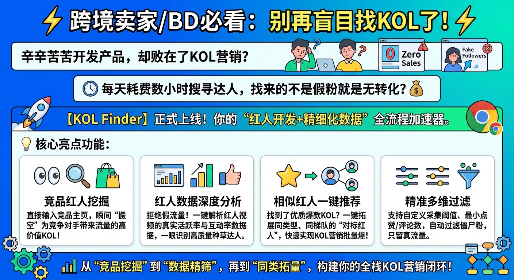
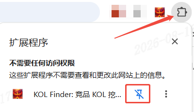
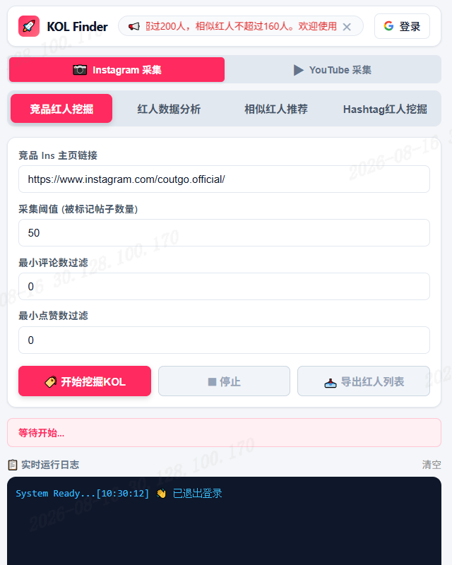
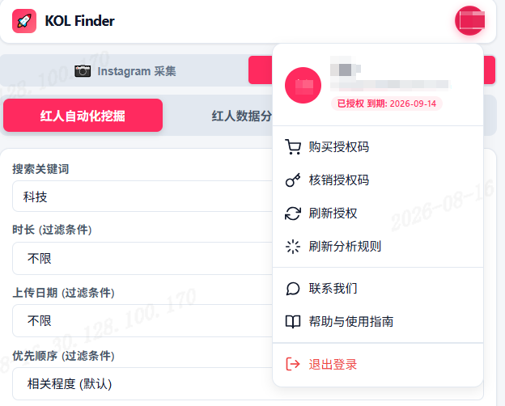

KOL Finder Pro 用户操作手册
现已经更新到最新2.0版本，功能进行了重大升级!!!
目录
- 产品简介
- 安装与加载
- 界面总览
- 登录与授权
- Instagram 功能详解
- 5.1 竞品红人挖掘
- 5.2 红人数据分析
- 5.3 相似红人推荐
- 5.4 Hashtag 红人挖掘
- YouTube 功能详解
- 6.1 红人自动化挖掘
- 6.2 红人数据分析
- 6.3 相似红人推荐
- 日志与任务恢复
- 常见问题 FAQ
- 附录：功能对照表
一、产品简介
KOL Finder 是一款专业的社交媒体红人（KOL）挖掘与分析工具，支持 Instagram 和 YouTube 两大平台。
核心能力
| 能力 | 说明 |
|---|---|
| 🔍 红人挖掘 | 根据竞品账号或话题批量发现目标红人 |
| 📊 数据分析 | 深入分析红人的发帖频率、互动率、粉丝等关键指标 |
| 🔗 相似推荐 | 基于已有红人，推荐其相似账号，快速拓展红人矩阵 |
| 📥 数据导出 | 所有采集结果支持 Excel/CSV 导出，方便二次利用 |
适用场景

二、安装与加载
2.1 安装步骤
- 谷歌应用商店搜索
KOL Finder或者pathofnow - 在 KOL Finder 插件详情页点击「添加至 Chrome」按钮并确认授权
- 安装完成后，在浏览器右上角扩展程序列表中将图标固定，点击即可直接启动

2.2 打开侧边栏
点击工具栏的插件图标，侧边栏将自动展开。建议固定该扩展到工具栏以便快速访问。
三、界面总览

3.1 顶部栏
| 元素 | 功能 |
|---|---|
| 🚀 KOL Finder | 品牌标识 |
| 📢 公告栏 | 滚动显示最新公告，点击 ✕ 可关闭 |
| 「登录」按钮 | 点击进行 Google 账号登录 |
| 头像按钮 | 登录后显示，点击展开用户菜单 |
3.2 平台切换
在功能区上方有两个大按钮：
点击即可切换，每个平台有独立的功能 Tab 和配置。
3.3 功能 Tab
每个平台内有多个功能子 Tab，点击切换不同功能。详见后续各平台章节。
3.4 状态指示器
显示当前任务状态，如「等待开始...」「采集中...」「分析完成」等。
3.5 日志控制台
实时显示采集过程中的关键信息，帮助你了解进度和排查问题。点击右上角「清空」可清除日志。
四、登录与授权
4.1 Google 登录
- 点击顶部栏的 「登录」 按钮
- 在弹出的 Google 登录页面选择你的账号
- 授权扩展获取基本信息
- 登录成功后，按钮变为你的头像首字母
4.2 用户菜单
点击头像按钮展开下拉菜单：
| 菜单项 | 功能 |
|---|---|
| 👤 用户信息 | 显示姓名、邮箱、授权状态 |
| 🛒 购买授权码 | 跳转到购买页面 |
| 🔑 核销授权码 | 输入授权码激活会员 |
| 🔄 刷新授权 | 重新验证授权状态 |
| ⚙️ 刷新分析规则 | 从服务器同步最新分析规则 |
| 💬 联系我们 | 跳转到客服页面 |
| 📖 帮助与使用指南 | 跳转到使用文档 |
| 🚪 退出登录 | 清除登录状态 |

4.3 授权状态说明
登录后，头像下方会显示授权状态徽章：
| 状态 | 含义 |
|---|---|
| 未授权 | 尚未激活，需要核销授权码 |
| 已授权 到期: 2027-08-24 | 正常授权，显示到期时间 |
4.4 核销授权码
- 点击头像 → 「核销授权码」
- 在弹窗中输入授权码
- 点击「确定」完成核销
4.5 刷新分析规则
服务器会持续更新分析规则（如最新的 Instagram 字段路径、YouTube 选择器等）。当遇到采集异常时：
- 点击头像 → 「刷新分析规则」
- 选择要刷新的规则类型
- 点击「确定」从服务器拉取最新规则
五、Instagram 功能详解
点击顶部 📷 Instagram 采集 切换到 Instagram 平台。
前置条件：你需要在 Chrome 中已登录 Instagram 账号（https://www.instagram.com）。建议使用 Chrome 常规模式而非无痕模式。
5.1 竞品红人挖掘
用途：输入竞品/品牌方的 Instagram 主页，自动采集其帖子中@竞品/品牌方的红人账号，形成竞品红人池。
操作步骤
- 点击 「竞品红人挖掘」 Tab
- 填写配置：
字段 说明 示例 竞品 Ins 主页链接 竞品或品牌方的 Instagram URL https://www.instagram.com/coutgo.official/采集阈值 要分析的帖子数量（10-100） 50最小评论数过滤 只保留评论数 ≥ 此值的帖子对应的红人 0（不过滤）最小点赞数过滤 只保留点赞数 ≥ 此值的帖子对应的红人 0（不过滤） - 点击 「🏷️ 开始挖掘KOL」
- 等待采集完成，日志中会显示进度
- 点击 「📥 导出红人列表」 下载 Excel 结果
采集流程
1. 打开竞品主页 → 滚动加载帖子 2. 提取帖子中的 @竞品/品牌方的红人账号 的KOL用户名 3. 自动去重、过滤（评论数/点赞数） 4. 汇总红人列表 → 可导出
结果字段说明
| 字段 | 含义 |
|---|---|
| 账户名称 | 红人的 Instagram 用户名 |
| 帖子链接 | 发现该红人的帖子 URL |
| 媒体类型 | 图片/视频/轮播图文 |
| 点赞数 | 该帖子的点赞数 |
| 评论数 | 该帖子的评论数 |
| 帖子内容 | 该帖子包含的文案或文字描述 |
| 用户主页链接 | 红人的 Instagram 主页 URL |
| 粉丝数 | 红人当前的关注者数量 |
| 帖子总数 | 红人累计发布的帖子数量 |
| 用户简介 | 红人主页的个人介绍 |
| 邮箱 | 红人简介里面公开的联系邮箱 |
| 关注数 | 红人关注的其他账号数量 |
| 昵称 | 红人主页显示的真实姓名或昵称 |
| 是否认证 | 红人是否拥有 Instagram 官方认证（蓝V） |
| 账户所在地 | 红人账号所属的国家或地区 |
| 加入日期 | 红人入驻该平台的日期 |
| 分析视频数 | 红人活跃度和互动率分析覆盖的红人视频样本总数 |
| 总跨越天数 | 红人视频样本总数中视频发布时间最早和最晚的间隔天数 |
| 平均发帖间隔天数 | 平均每个帖子之间的发布时间间隔（天） |
| 周均发帖频次 | 每周平均发布帖子的数量 |
| 活跃度标签 | 基于发帖频次等指标给出的活跃程度分类标签 |
| 平均点赞数 | 分析周期内所有帖子的平均点赞数 |
| 平均评论数 | 分析周期内所有帖子的平均评论数 |
💡 提示：如需指定分析红人视频的样本数或者还需要分析平均播放数，需要使用「红人数据分析」功能进一步分析。
5.2 红人数据分析
用途：对单个红人进行深度画像分析，获取粉丝数、帖子数、活跃度、互动率等关键指标。
操作步骤
- 点击 「红人数据分析」 Tab
- 填写配置：
字段 说明 示例 红人 Ins 主页链接 目标红人的 Instagram URL https://www.instagram.com/sportscenter采集阈值 分析近 N 条动态（5-100） 20 - 点击 「📈 开始分析红人」
- 等待采集完成，日志中会显示分析进度
- 点击 「📄 导出分析报告」 下载 Excel 结果
分析流程
1. 打开红人主页 → 采集账户信息（粉丝数、帖子数、认证状态） 2. 采集最近 N 条帖子 → 获取每条的点赞数、评论数、发布时间 3. 采集 Reels 数据 → 获取播放量 4. 合并帖子 + Reels 数据 → 计算各项指标 5. 输出分析报告
分析指标说明
| 指标 | 计算方式 | 含义 |
|---|---|---|
| 粉丝数 | Instagram 原始数据 | 红人当前粉丝量 |
| 帖子总数 | Instagram 原始数据 | 红人发布的总帖子数 |
| 账户所在地 | About This Account 数据 | 红人注册地区 |
| 加入日期 | About This Account 数据 | 账号创建时间 |
| 平均点赞数 | 近 N 条帖子点赞数平均值 | 红人内容的基础受欢迎度 |
| 平均评论数 | 近 N 条帖子评论数平均值 | 红人粉丝互动深度 |
| 平均播放数 | 近 N 条帖子播放数平均值 | 红人视频的触达力 |
| 活跃率 | 发帖频率分析 | 红人的内容产出活跃度 |
| 互动率 | (点赞+评论)/粉丝数 | 红人粉丝互动质量 |
日志关键字解读
📊 账户信息: ufc | 粉丝=50452754 | 帖子=46927 | 认证=true ← 账户基本信息 📥 首屏重放：1 条响应，12 edges → 12 有效节点 ← 首屏帖子捕获 📊 已采集 10 条帖子（获取12条，过滤2条（置顶=2））... ← 过滤说明 📊 简介: 所在地=美国 | 加入=2012年2月 ← About This Account 🎬 跳转 Reels 页面 ← Reels 采集 📊 已收集 12 条 Reels... ← Reels 数量 🔗 合并 Reels 播放数据到帖子 ← 数据合并 📊 帖子 10 条 | Reels 24 条 ← 合并结果 ✅ 匹配到播放数: 10/10 条 ← 播放数匹配 📈 分析帖子活跃度+互动率... ← 指标计算
5.3 相似红人推荐
用途：指定一个标杆红人，自动推荐 Instagram 平台上的相似红人账号，快速拓展红人矩阵。
操作步骤
- 点击 「相似红人推荐」 Tab
- 填写配置：
字段 说明 示例 对标红人 Ins 主页链接 标杆红人的 Instagram URL https://www.instagram.com/sportscenter采集阈值 推荐数量（5-100） 50 - 点击 「🔍 开始推荐相似红人」
- 等待采集完成
- 点击 「📥 导出推荐列表」 下载结果
推荐流程
1. 打开标杆红人主页 → 采集账户信息 2. 逐个跳转推荐红人主页 → 进行深度画像分析 3. 汇总推荐列表 → 可导出
💡 提示：每天不要频繁大量使用，每天建议不超过160个相似红人，如果超过，有可能会被 Instagram 平台限制24小时内不能使用该功能。
5.4 Hashtag 红人挖掘
用途：通过话题标签（Hashtag）挖掘相关红人，适合按领域/主题发现红人。
操作步骤
- 点击 「Hashtag红人挖掘」 Tab
- 填写配置：
字段 说明 示例 话题标签 要搜索的 Hashtag（无需 # 号） fashion采集阈值 分析帖子数量（10-100） 30最小评论数过滤 只保留评论数 ≥ 此值的帖子对应的红人 0（不过滤）最小点赞数过滤 只保留点赞数 ≥ 此值的帖子对应的红人 0（不过滤） - 点击 「开挖挖掘红人」
采集流程
1. 打开 hashtag 关键词搜索页 → 滚动加载帖子 2. 提取帖子中的 KOL 用户名 3. 自动去重、过滤（评论数/点赞数） 4. 汇总红人列表 → 可导出
结果字段说明
同 5.1 竞品红人挖掘 结果字段。
💡 提示：如需指定分析红人视频的样本数或者需要分析平均播放数，需要使用「红人数据分析」功能进一步分析。
六、YouTube 功能详解
点击顶部 ▶ YouTube 采集 切换到 YouTube 平台。
前置条件：需要在 Chrome 中登录 YouTube/Google 账号。建议使用与授权时相同的 Google 账号以获得最佳体验。
6.1 红人自动化挖掘
用途：根据关键词在 YouTube 搜索结果中批量挖掘红人频道，获取频道信息和视频数据。
操作步骤
- 点击 「红人自动化挖掘」 Tab
- 填写配置：
字段 说明 示例 搜索关键词 YouTube 搜索关键词 科技时长 视频时长过滤 不限/3分钟以下/3-20分钟/20分钟以上上传日期 上传时间过滤 不限/今天/本周/本月/今年优先顺序 排序方式 相关程度/上传日期/热门程度目标采集视频数量 要分析的视频数量 30开启深度采集 是否深入采集点赞/评论/频道信息 ✅ 勾选 - 点击 「▶ 开始挖掘KOL」
- 等待采集完成
- 点击 「📥 导出结果」 下载 Excel
采集流程
1. 在 YouTube 搜索页输入关键词 → 应用过滤条件 2. 滚动搜索结果页 → 收集视频列表 3. 进入每个视频详情页 → 提取： - 标题、链接、频道名 - 观看数、点赞数、评论数 - 发布日期（转换为中国标准时间） - 频道订阅数 4. 自动去重 → 汇总红人列表 → 可导出
关于深度采集
勾选「开启深度采集」后，系统会：
- 进入每个视频详情页获取精确的观看数（覆盖搜索页的估算值）
- 提取视频评论数（需要滚动加载）
- 获取频道信息（订阅数、频道链接）
⏱ 深度采集会增加采集时间，但数据更准确。如果只需要视频列表，可取消勾选。
结果字段说明
| 字段 | 含义 |
|---|---|
| 视频标题 | YouTube 视频标题 |
| 视频链接 | 视频 URL（Shorts 链接自动转换为标准格式） |
| 频道名称 | 发布视频的频道名 |
| 频道链接 | 频道 URL |
| 观看数 | 视频播放量 |
| 订阅者数 | 粉丝数量 |
| 总视频数 | 发布的总视频数 |
| 总观看数 | 所有视频的总观看数 |
| 点赞数 | 视频点赞数 |
| 评论数 | 视频评论数 |
| 发布时间 | 视频的发布时间 |
| 国家 | 博主的地理位置 |
| 频道简介 | 描述频道的内容 |
| 邮箱 | 描述内容中公布的公开邮箱 |
6.2 红人数据分析
用途：对 YouTube 红人频道进行深度分析。
⚠️ 注意：此功能正在开发中，当前按钮为灰色预留状态。
6.3 相似红人推荐
用途：基于标杆 YouTube 红人推荐相似频道。
⚠️ 注意：此功能正在开发中，当前按钮为灰色预留状态。
七、日志与任务恢复
7.1 日志控制台
侧边栏底部的黑色控制台实时显示采集日志：
日志级别说明
| 图标 | 含义 |
|---|---|
| 🔗 | 页面跳转 |
| 📂 | 页面加载完成 |
| ⏳ | 等待数据中 |
| 📊 | 数据统计/进度 |
| 📥 | 首屏数据捕获 |
| ✅ | 操作成功 |
| 🎉 | 任务完成 |
| ⚠️ | 警告（如「标签页不在前台」） |
| ❌ | 错误 |
7.2 任务恢复
当你关闭侧边栏或浏览器后，下次打开时系统会检测未完成的任务：
- 点击 「继续任务」 从上次断点继续采集
- 点击 「放弃」 清除未完成任务
💡 任务恢复功能支持「竞品红人挖掘」和「相似红人推荐」两个需要批量处理的功能。单次分析（如红人数据分析）不支持恢复。
7.3 数据导出
每个功能完成后，对应的「📥 导出」按钮会变为可用状态：
- 点击 「📥 导出红人列表」 / 「📄 导出分析报告」 / 「📥 导出结果」
- 浏览器自动下载 Excel 文件
- 文件名格式：
{功能类型}_{时间戳}.xlsx
⚠️ 注意：导出按钮在采集完成前为灰色不可点击状态。
八、常见问题 FAQ
Q1: 采集时提示「标签页不在前台」怎么办？
A: 请将 Instagram/YouTube 页面标签页保持在前台。Chrome 扩展在后台标签页中无法正常触发页面滚动和数据加载。
Q2: Instagram 采集一直显示「已采集 0 条」怎么办？
A: 这通常是过滤条件过严导致的。尝试：
- 将「最小评论数」和「最小点赞数」都设为
0 - 如果仍然为 0，可能是该红人确实没有公开帖子（私密账号）或全是图片（设置了「仅视频」过滤）
Q3: YouTube 评论数显示为「0」或一直在加载？
A: YouTube 评论需要滚动触发懒加载。请确保：
- 视频详情页在前台
- 开启了「深度采集」
- 网络状况良好
Q4: 如何停止正在运行的任务？
A: 点击对应功能的 「⏹ 停止」 按钮。已采集的数据会保留，可以继续导出。
Q5: 刷新页面后之前的数据还在吗？
A: 已完成并导出的数据已下载到本地。正在进行的任务会保存进度，下次打开侧边栏时可以恢复。
Q6: Instagram 采集需要登录吗？
A: 需要。你必须在 Chrome 中登录 Instagram 账号才能正常采集。未登录状态下 Instagram 会限制访问红人主页。
Q8: 采集速度慢怎么办？
A: 采集速度受以下因素影响：
- 网络延迟：Instagram/YouTube 服务器响应速度
- 反爬检测：系统内置了随机延迟，模拟人工操作，防止被限制
- 数据量：阈值越大，采集时间越长
- 建议：保持页面在前台，避免系统休眠
Q9: 数据安全吗？
A: 所有采集数据仅保存在你的本地浏览器中，不会上传到任何服务器。扩展遵循 Chrome 扩展隐私政策。
附录：功能对照表
| 平台 | 功能 | 输入 | 输出 |
|---|---|---|---|
| 竞品红人挖掘 | 竞品主页 URL | 红人列表（含帖子信息） | |
| 红人数据分析 | 红人主页 URL | 深度画像报告 | |
| 相似红人推荐 | 标杆红人 URL | 推荐红人列表 | |
| Hashtag 红人挖掘 | Hashtag 关键词 | 红人列表（含帖子信息） | |
| YouTube | 红人自动化挖掘 | 搜索关键词 | 视频/红人列表 |
| YouTube | 红人数据分析 | 频道 URL | 待开发 |
| YouTube | 相似红人推荐 | 标杆红人 URL | 待开发 |
📧 遇到问题？ 微信联系：pathofnow